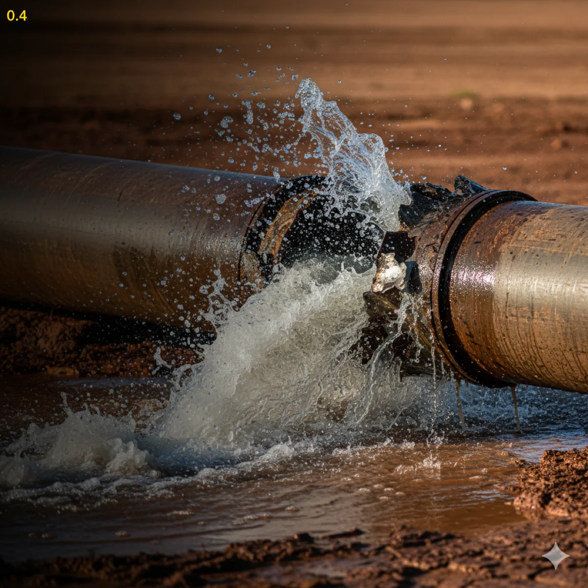

Destape de drenajes, reparación de fugas, instalación de boiler y más. Llegada en 30-60 minutos, servicio 24/7 y garantía escrita en todos los trabajos.
WhatsApp: 52 667 392 2273 · Llamadas: 667 392 2273
Contactar por WhatsAppLlegamos en 30-60 minutos a cualquier colonia de Culiacán, incluidas emergencias
Herramientas profesionales para cada tipo de trabajo: sonda, hidrojeteado, cámara de inspección
Todos nuestros servicios incluyen garantía por escrito para tu tranquilidad
Atendemos emergencias a cualquier hora: madrugadas, fines de semana y días festivos
WC, lavabos, fregaderos, coladeras y líneas principales. Sonda, hidrojeteado y cámara de inspección. Desde $500.
Localización y reparación de fugas visibles y ocultas en paredes, pisos y techos sin daño innecesario.
Equipos electrónicos especializados para encontrar fugas sin romper paredes. Ahorra en reparaciones.
Diagnóstico y solución de baja presión en regaderas, llaves y sistemas de agua. Mismo día.
Instalación profesional de boilers de gas y eléctricos. Todas las marcas con garantía.
Limpieza, revisión y servicio preventivo para boilers Bosch, Vento, Calorex, Noritz y más. Desde $450.
No enciende, no calienta, gotea o pierde presión. Diagnóstico gratis y reparación el mismo día.
Instalación y cambio de tazas, lavabos, regaderas y accesorios de baño completo.
Instalación de tinacos Rotoplas, Aquaplas y más. Incluye soporte y conexiones. Desde $2,500.
Limpieza profunda de drenajes y bajadas pluviales con hidrojeteado profesional preventivo.
Instalación, revisión y reparación de líneas de gas natural y LP. Técnico certificado.
Atención de urgencias de plomería a cualquier hora, incluyendo madrugadas y días festivos.
Cambio y reparación de tubería de cobre, PVC, CPVC y PEX. Adiós al sarro y las fugas recurrentes.
Cisternas con bomba y flotador eléctrico para no sufrir los cortes de agua en temporada de calor.
Reparación de llaves que gotean y cambio de mezcladoras de baño y cocina el mismo día.
Mantenimiento y urgencias para negocios, restaurantes y oficinas. Factura CFDI el mismo día.
Encuentra la página exacta para lo que necesitas:
"Tenía el WC tapado un domingo por la mañana. Llegaron en 1 hora, lo destaparon rápido y dejaron todo limpio. Precio justo y muy profesionales."
— Ana L., Stanza Toscana"Fuga de agua en la pared que no encontrábamos. Vinieron con equipo especial, la detectaron sin romper nada y la repararon el mismo día."
— Roberto M., Las Quintas"Instalaron el boiler nuevo rápido y bien hecho. Trabajo limpio, explicaron todo y dejaron el área igual que como la encontraron."
— Patricia R., Tres RíosCubrimos toda la ciudad de Culiacán y sus alrededores. Estas son algunas de las zonas con mayor demanda de servicio:
Tres Ríos, Las Quintas, Chapultepec, Stanza Toscana, La Campiña, Montebello, Villa Universidad, Lomas de Rodriguera.
Centro Histórico, Guadalupe, Jorge Almada, Gabriel Leyva, Miguel Alemán, Tierra Blanca, Antonio Toledo Corro.
Infonavit Barrancos, Bachigualato, Valle Alto, Las Flores, Humaya, Los Pinos, La Lima, El Barrio.
Altamira, Colinas de San Miguel, Cumbres, Real del Valle, Privada del Sol, Valle Dorado, Santa Fe y más.
Contáctanos ahora por WhatsApp o teléfono. Servicio el mismo día, garantía escrita.
Somos plomeros profesionales en Culiacán con más de 15 años de experiencia. Contamos con maquinaria hidrodinámica, cámaras de inspección y herramientas especializadas para resolver cualquier problema de plomería con rapidez y garantía.
Contáctanos por WhatsApp para atención inmediata. Te haremos algunas preguntas sobre tu problema y te daremos un estimado de precio y tiempo de llegada.
Enviar mensaje por WhatsApp